The feel
Gothic whimsy looks like a child's storybook gone awry. That was IGN's phrase for Don't Starve, whose gothic-inspired look makes even the most benign shrubbery seem threatening.1 The BFI credits Burton with a knack for blending the gloomy and frightful with the whimsical.2 Tarsier wanted the world of Little Nightmares to seem almost reported by a child, where things are always bigger, faster and larger than life.3
The fright and the joke arrive together. Edward Gorey's little books look at first like Victorian or Edwardian children's books, while their verse spins black comedy out of murder and malaise,4 and he crosshatched ghastly scenes in a way that left them deadpan and winkingly absurd.5 The monsters of The Nightmare Before Christmas are not bad at heart: in Burton's words, they "just look a certain way and things shouldn't be judged by the way they look".6
- spindly
- crooked
- deadpan
- storybook
- ghoulish
- sweet but sinister
Where it comes from
The BFI traces Burton's angular gothic architecture to the German Expressionist horror films of the 1920s,2 and The Cabinet of Dr. Caligari (1920) is said to be cinema's first example of German Expressionism, a style in which the world itself is out of joint.7 Edward Gorey's pen-and-ink books, among them The Gashlycrumb Tinies (1963), dressed black comedy up as Victorian children's books.4 Tim Burton drew on comics, cartoons, children's books, monster movies and Expressionist cinema alike,8 and his stop-motion short Vincent (1982) is a pastiche of Dr. Seuss, Poe and German Expressionist film.9 For The Nightmare Before Christmas (1993), directed by Henry Selick, art director Deane Taylor kept to an Expressionist style true to Burton's drawings.10 Games took it up with MediEvil (1998), first pitched as Ghouls'n Ghosts in Burton's art style,11 and Don't Starve (2013), whose reference bin held "a lot of Burton and [Edward] Gorey images".12
Core elements
Dark subjects with storybook appeal
Klei aimed Don't Starve's art at "something that is dark and creepy while still maintaining a strong sense of appeal".12 Little Nightmares was billed as a "dark whimsical tale", and its lead designer calls it "our dark take on Little Big Planet".13
Spindly figures and strange eyes
Figures are stretched thin. Jack Skellington's puppet, almost 10 inches of steel, foam and cloth, pushes the envelope for thinness,6 and in Lost in Random everyone teeters on long spindly limbs.14 Eyes go strange: huge, sewn shut, missing or shrunk to dots. The BFI counts wide-eyed characters among the marks of most Burton films.2 The Nightmare puppets were designed without eyeballs: "We've either decided to sew their eyes shut or remove them," says Burton.6 Gorey's Neville peers out of an enormous window with black-dot eyes.4
Crooked Expressionist sets
Buildings lean and stairs climb at wrong angles. Caligari's actors live in "a jagged landscape of sharp angles and tilted walls and windows", with staircases climbing crazy diagonals.7 In Vincent, chequerboard walls sway and bend, and a small boy climbs a massive, misshapen staircase.9
Scratchy pen and ink
The line is scratchy, like a newspaper cartoon or a forged Victorian engraving. Kevin Forbes says Jeff Agala gave Don't Starve "this great sketchy newspaper cartoon style".12 Gorey's pen-and-ink illustrations flawlessly counterfeit Victorian engravings,4 and the pen and ink of Gorey and Ronald Searle influenced the art direction of The Nightmare Before Christmas.10
Black-and-white stripes and colour contrast
Black and white carries the pattern: MoMA's Burton retrospective lined a corridor floor to ceiling with his signature black-and-white stripes.8 Colour sets a drab world against a bright one, in either order. The BFI finds bold colour and Americana clashing with gothic architecture in most of Burton's films.2 Nightmare's subdued palette shows off texture and depth, while Christmastown captivates Jack with its bright colours,6 and Coraline's real world is a little flatter and more worn than the slightly glossier Other World, where a garden of colourful flowers blooms.15
Handmade cut-paper look
IGN likened Don't Starve's paper-cutout style to a pop-up book.1 Vincent taught Burton and Rick Heinrichs to combine "the really graphic look of a two-dimensional picture with something that works in three dimensions", and that mix of flat and solid endures as a signature of Burton's later work.9 Coraline's crew shot for a handmade look, down to cherry blossoms made of painted popcorn.15
How to do it
Exaggerate the shapes
Do what Tarsier's art director does: find the core personality of a thing, isolate the elements that make it up, then amplify, twist and distort them until they take on a new life of their own.3 Lost in Random's townsfolk come out as gremlins with upside-down faces and withered trees in top hats.14 To push a drawing, use a liquify brush that paints the deformation straight onto the canvas: one mode drags the image along the stroke, another grows or shrinks it under the cursor, and another twirls it.16
Ink the lines and hatch the tone
Ink with a steady hand but keep the wobble: use only enough line smoothing to give a little comfort while keeping the little irregularities.17 Then build tone with parallel hatching: space the lines 2 to 10 pixels apart, centre to centre, lay one plane at -45 degrees and then a second at +45 degrees, and tie line thickness to pen pressure, or to speed with a mouse.18 Hatch on a separate layer and erase the extra areas.18 Set dense, patterned shapes against open space, as Gorey does around his small victims.4
Bend the buildings
Model the house straight, then bend it with a bend deformer: it rotates the mesh by a set angle, and limits can confine the effect to part of the deform axis, such as the top floors.19 Put the origin at the foot of the house and deform along the vertical axis. Distances are measured from the origin, and the further a vertex is from it, the more it bends, so the doorstep stays put while the roof leans.19
Stand flat figures in 3D
Don't Starve stands 2D characters and odd creatures in a 3D world,20 and its three-quarter overhead view makes that world feel like a living, breathing diorama.1 Billboard each flat character around its vertical axis, so that it keeps turning to face the camera's viewing plane.21 For inked edges on solid models, add a second material pass that is black and unshaded, with its front faces culled and the mesh grown a little.21
Animate like a stop-motion puppet
Change expressions by swapping parts. The Nightmare crew borrowed George Pal's trick of substituting different faces and limbs in each frame, and Jack had 400 heads, replaced each time his expression changed.6 Each Coraline puppet also has two heads with different base expressions.15 For a puppet's frame-by-frame feel in 3D, step the animation curves so that each value holds for a set number of frames, which gives choppy movement.22 If you draw frame by frame and are just starting out, keep to 12 frames per second.23
Give each world its own grade
Make the everyday world a little flatter and more worn, and build the other with more depth so it feels open and inviting, as Coraline's sets do.15 Give each world its own colour grade: lower the saturation in the drab one, or remap its tones with a colour-correction gradient whose left end stands for black and right end for white.24 Save one bright colour for the hero, like Six's yellow raincoat against the dank metal of The Maw.13
Add light shafts and fog
Light the everyday high key and the nightmares low key, as Vincent does, and cut simple sets with shafts of light, stark silhouettes and billowing fog.9 Use height fog, which covers everything below a set height whatever its distance from the camera, and volumetric fog, which takes its colour from the lights that cross it.24
Cheat sheet
- Hatching
- Lines 2 to 10 px apart, planes at -45° then +45°18
- Grading
- Saturation down in the drab world, or a colour-correction gradient24
- Leaning walls
- Bend deformer along the vertical axis, origin at the base19
- Flat figures
- Billboarded around the vertical axis in a 3D scene21
- Outline
- Second pass: black, unshaded, front faces culled, grown slightly21
Do
- Work in black and white when you mix flat and solid. In Vincent, with no colour to separate areas of the screen, the combination of 2D and 3D space is distilled and clarified.9
- Build the strange from the familiar. Everything in Madness Returns' Wonderland had to come from an idea, image or experience Alice had met in real life, so the team researched the music, literature, opera and news of her day.25
- Bring the camera in close and move it. Stop-motion traditionally kept the camera far from the puppet, but Nightmare's director of photography, Pete Kozachik, did just the opposite, and its cameras soar where older stop-motion cameras stayed fixed.6
- Take references from architecture, fashion and film rather than other games. Ken Wong's team drew on Gothic architecture, period fashion and surrealist artists,25 and Tarsier on Ghibli films and The City of Lost Children.13
- Make the player small. In Little Nightmares the scale gap between Six and The Maw turns furniture into places to hide and climb.3
Avoid
- Stripes and boots as the whole idea. Rock Paper Shotgun found Lost in Random's world blending into one a bit, since there are only so many ways to wear Doc Martens and a stripey top.14
- Hiding things behind the scenery. In Don't Starve's three-quarter view, items can sit directly behind the environment, often where no angle makes them clickable.1
- Showing the gore. Gorey's smothered George is a pair of tiny legs under a vast rug,5 and Neville, dead of ennui, is the top of a bored little head.4
- Setting out to copy Burton. Tarsier hears the Burton comparison most often but never courted it, and says Little Nightmares has its own identity.3
- Over-animated faces. Coraline's puppet fabrication supervisor warns that the mechanical heads can be over-animated if you're not careful, and aims for subtle movement.15
Tools and tutorials
- Krita: Hatching Brush Engine
Separation, thickness and crosshatching styles for pen-and-ink tone.18
- Krita: Transform Tool
Liquify mode paints the deformation straight onto the canvas: drag, grow, shrink or twirl.16
- Blender: Simple Deform Modifier
Twist, bend, taper or stretch a straight model, limited to part of its axis.19
- Blender: F-Curve Modifiers
Stepped Interpolation holds each value for a set number of frames.22
- Godot: Standard Material 3D
Billboard modes for flat characters, and Grow for cheap black outlines on 3D models.21
- Godot: Environment and post-processing
Saturation, colour correction gradients, height fog and volumetric fog.24
- Krita: Inking
Use more of your arm the longer the stroke, and a Stabilizer of about 50 to keep the line's little irregularities.17
- Line-art tips with Krita 2.9
David Revoy's own inking tips, which the Krita manual's inking tutorial points to.17
Palette
Sampled from The Gashlycrumb Tinies, The Nightmare Before Christmas, Corpse Bride, Don't Starve and Little Nightmares. Click a house to copy its colour.
Feel the vibe
Listen
Play it with Spiral Hill on screen: can one tune be a lullaby and a threat at once?
YouTubeTry sketching a crooked house to it and see whether your line starts to wobble.
YouTubePlay it quietly while you block out a room far too big for the child in it.
YouTubePut it on beside the Alice screenshots and ask what makes a nursery tale feel unwell.
YouTubePaint the inviting half of a place to it, the half you see before it turns wrong.
YouTube
More references
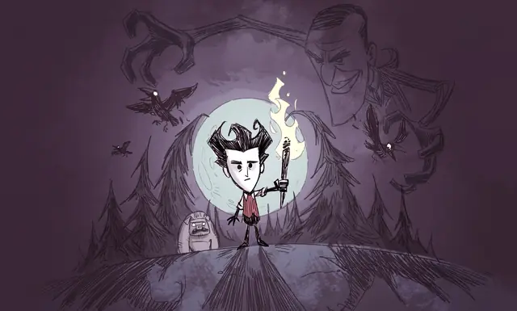
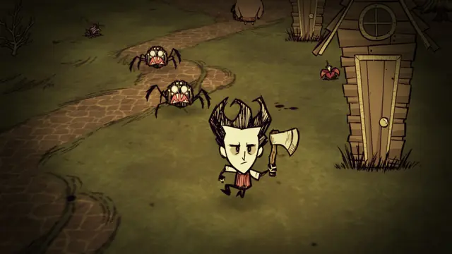
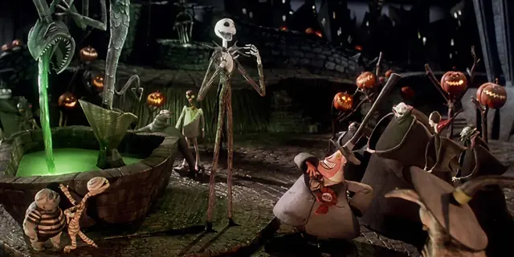
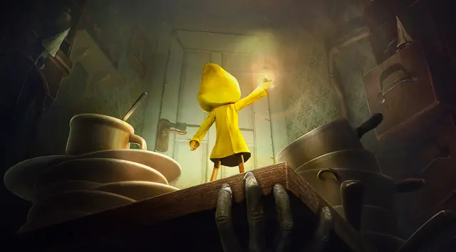
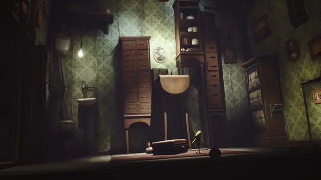
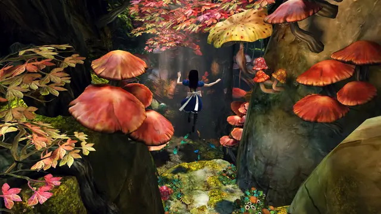
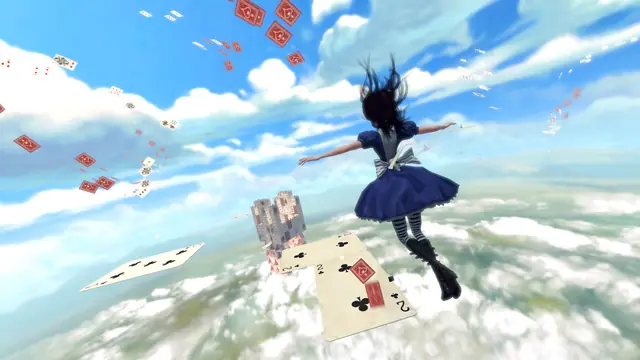
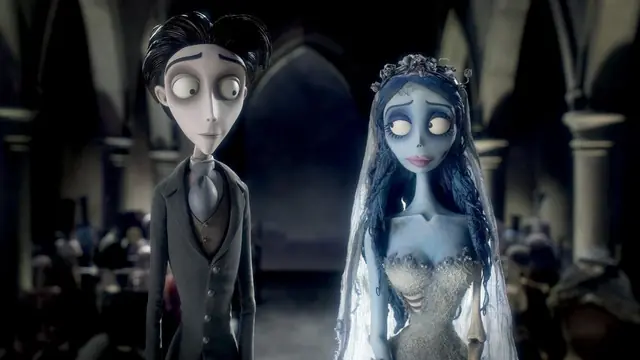
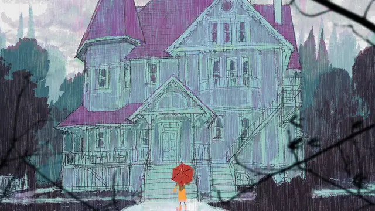
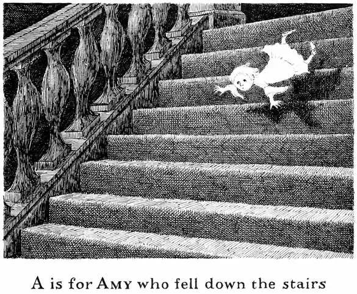
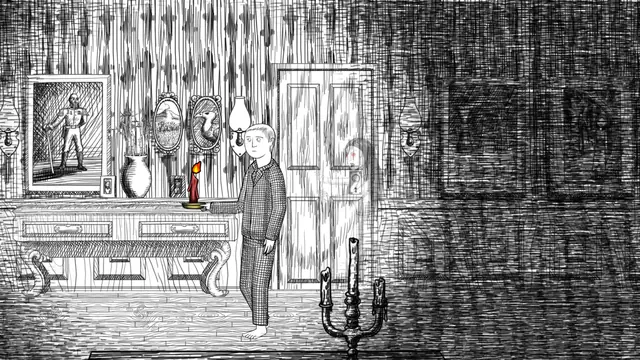
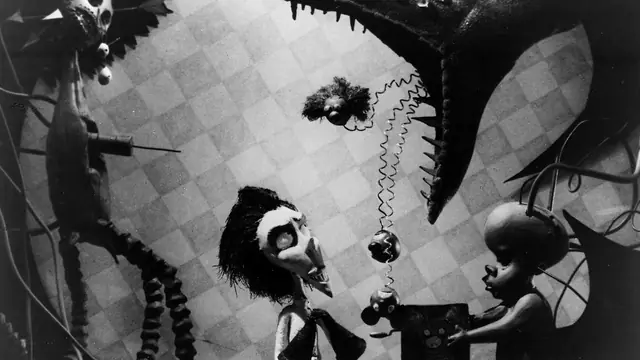
Games
- MediEvil
Study Sir Dan, the grunting skeleton with one eye and no lower jaw who throws his own arm like a boomerang.11
- American McGee's Alice
It brought Goth culture to games a decade before Madness Returns.25
- Alice: Madness Returns
Art direction by Ken Wong, going back to the roots of Victorian culture. Study the Dark Horse art book, which collects the team's work and their thinking behind it.25
- Don't Starve
Kevin Forbes wrote it a steampunk-horror backstory,12 and its art was mostly drawn in Flash and exported to Klei's own animation format.26 Study how its novelesque menus and comically blunt bits of story keep up the storybook feel.1
- Little Nightmares
Study how The Maw mixes food horror, parasites, childhood games and primal fears.3
- Lost in Random
Study the cobbled streets drenched in moody purple light, and notice how the realms blend into one a bit when everyone wears the same stripes and boots.14
Film, art and more
- The Cabinet of Dr. Caligari
Look past the tilted walls to the trees with spiky leaves and the grass like knives.7
- The Gashlycrumb Tinies
Edward Gorey's ABC of 26 children's deaths in dactylic couplets, with Death on the cover as a skeletal nanny.4
- Vincent
Burton's six-minute stop-motion short about a 7-year-old who reads Poe and wants to be Vincent Price.6 Study the chequerboard walls and the shafts of light.9
- Edward Scissorhands
An abandoned castle above a pastel-coloured neighbourhood: the two worlds, in live action.2
- The Nightmare Before Christmas
Henry Selick directed it, with Burton producing.10 Fourteen stop-motion animators, working on all the sets at once, finished about 70 seconds of film a week.6
- Coraline
Henry Selick's stop-motion adaptation for Laika, where a miniature knitter made the puppets' clothes and a simple sweater took about three weeks.15
- Gloom
An eccentric family of misfits on transparent cards, in gloomy art that its publisher compares to Edward Gorey's.27
Sources
- 1Don't Starve Review
- 2Tim Burton: 10 essential films
- 3Little Nightmares Interview: Into The Maw
- 4The Birth, Death, and Long Afterlife of The Gashlycrumb Tinies
- 5Edward Gorey Killed His Darlings
- 6The Concept: Jack-o'-Santa
- 7The Cabinet of Dr. Caligari (Great Movies)
- 8Tim Burton retrospective brings together hundreds of artworks and film-related objects to trace the trajectory of Burton's creative imagination
- 9Tim Burton's 'Vincent': A Matter of Pastiche
- 10The Nightmare Before Christmas (1993)
- 11Behind the Classics: MediEvil
- 12Don't Starve: A Tim Burton take on Minecraft
- 13'Little Nightmares' Lead Designers on Studio Ghibli Influence and a Possible Sequel
- 14Lost In Random review
- 15On the Set with 'Coraline': Where the Motion Doesn't Stop
- 16Transform Tool
- 17Inking
- 18Hatching Brush Engine
- 19Simple Deform Modifier
- 20Don't Starve
- 21Standard Material 3D and ORM Material 3D
- 22F-Curve Modifiers
- 23Animation with Krita
- 24Environment and post-processing
- 25Alice: Madness Returns - McGee on retracing Goth roots
- 26Road to the IGF: Klei Entertainment's Don't Starve
- 27Gloom